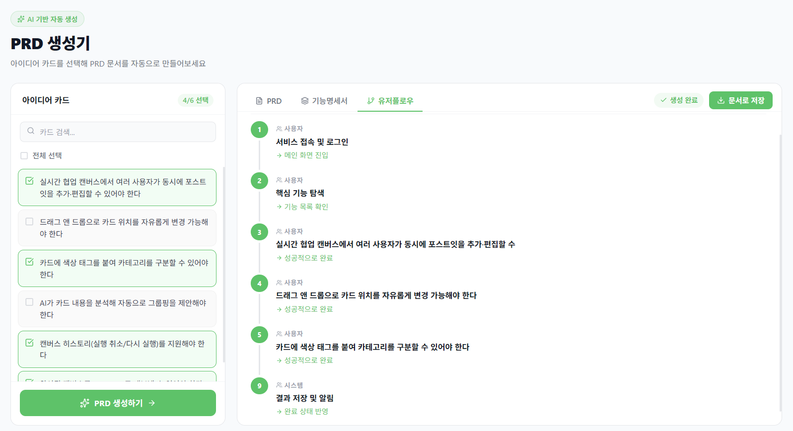
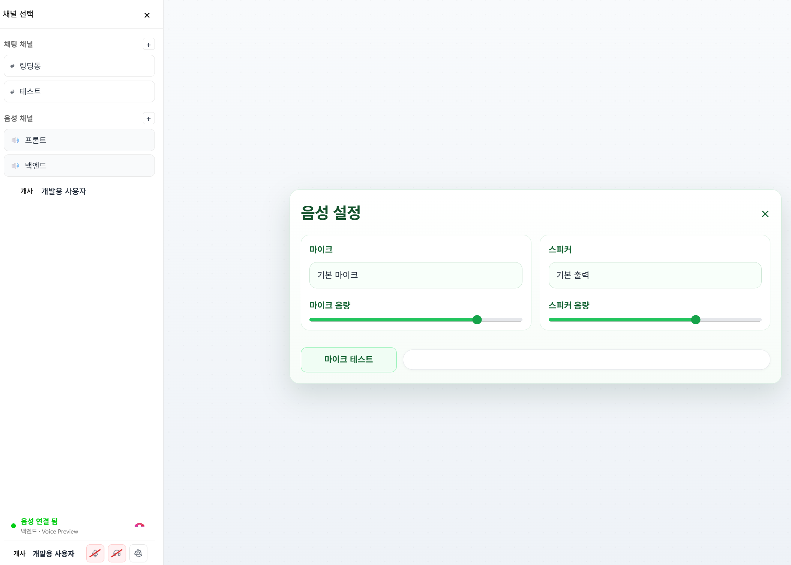
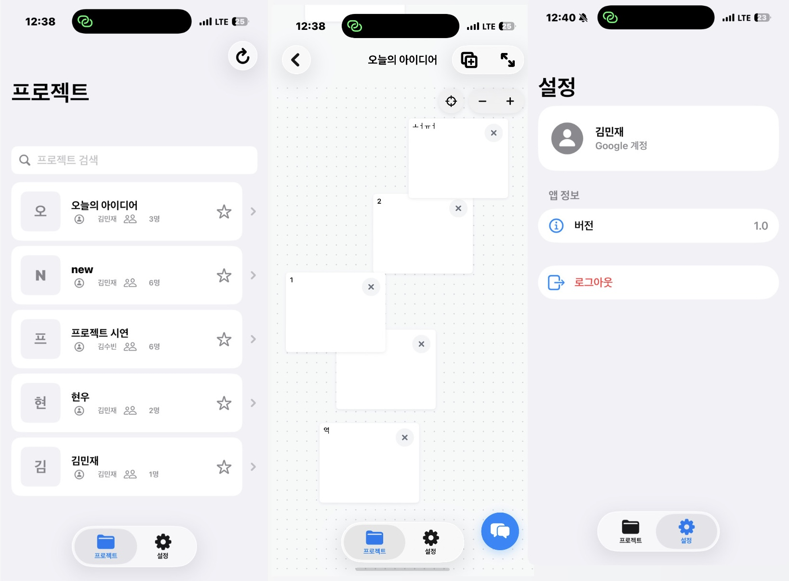

2026 캡스톤디자인(2) — Team 1-on-musk · 중간 발표
음성 회의에서 PRD와 프로토타입까지,
개발 중간 진행 현황 보고
개발 진행 현황
UI 및 생성 파이프라인 로컬 개발 완료. Claude API 연동으로 완전 자동화 예정
같은 네트워크 3대 연결 성공. 외부 네트워크 TURN 서버 적용 중
Swift iOS 앱 70% 완료. 소셜 로그인 및 모바일 API 연동 완성

사용자 아이디어를 AI가 분석해 PRD를 자동 작성합니다. UI와 파이프라인 모두 로컬 완료, 배포 시 Claude API 키 연동으로 완전 자동화 전환 예정입니다.
Claude API 키 연동 → 완전 자동화 배포 / STT 연결로 음성 기반 PRD 생성 추가

RTCPeerConnection 기반 P2P 구현 완료. 같은 네트워크 3대 연결 성공. 외부 네트워크는 TURN 서버 이슈 — coturn 자체 구축으로 해결 예정입니다.
동일 네트워크 3대 성공, 외부 불가 → coturn 구축으로 해결. 다자간 확장 시 SFU (mediasoup) 도입

Swift 네이티브 앱 70% 완료. 소셜 로그인, 캔버스, 채팅까지 구현됐으며 백엔드는 플랫폼별 redirect_uri 동적 처리로 모바일-웹 공통 인증을 완성했습니다.
WebRTC 음성 채팅 모바일 연동 / 실기기 전반 UX 테스트 및 폴리싱
앞으로의 개발 일정
마이크로서비스 아키텍처란
모든 기능이 하나의 코드베이스·서버에 통합된 전통적인 구조
기능별로 분리된 독립적인 소규모 서비스들이 API로 통신하는 구조
글로벌 기업들의 선택
추천·스트리밍·결제·검색을 각각 독립 서비스로 운영. 특정 서비스 장애가 전체 플랫폼에 영향을 주지 않도록 격리. MSA 전환 이후 배포 횟수를 수십 배 늘리는 데 성공.
초대형 모놀리식에서 MSA로 전환해 팀별 독립 배포 사이클 확보. 이 경험이 AWS 클라우드 서비스의 기술 기반이 되었으며 Amazon Prime, Marketplace 등을 독립 운영.
지도, 결제, 드라이버 매칭, 알림을 각각 독립 서비스로 운영. 글로벌 확장 시 특정 지역·기능만 집중 스케일아웃. 도시별 수요 패턴에 맞는 유연한 대응 가능.
카카오톡 메시지, 카카오페이, 카카오맵, 카카오게임 등을 서비스별 독립 팀이 각자 배포·운영. 하나의 서비스 점검이 다른 서비스에 영향을 미치지 않는 구조.
숙소 검색, 예약, 결제, 메시지, 리뷰를 분리해 각 도메인 팀이 독립 소유. 검색 엔진 고도화나 결제 개편 시 다른 서비스에 영향 없이 독립 개발 가능.
음악 재생, 검색, 추천, 소셜 기능을 Squad(팀) 단위로 서비스 독립 소유. 추천 알고리즘 업데이트가 재생 서비스를 멈추지 않는 독립적인 릴리즈 사이클 유지.
왜 ON-IT에 MSA인가
AI PRD 파이프라인을 업데이트할 때 음성 채팅이나 iOS API 서버를 멈출 필요 없이 해당 서비스만 재배포할 수 있습니다.
AI PRD 요청이 급증할 때 AI 서비스만 스케일아웃하고, WebRTC 시그널링은 별도 자원으로 운영해 비용을 최적화합니다.
WebRTC TURN 서버에 문제가 생겨도 PRD 생성과 iOS 캔버스 기능은 정상 운영됩니다. 단일 장애점(SPOF)을 제거합니다.
프론트·백·AI 파트가 각자의 서비스를 독립 소유하므로 배포 사이클이 충돌하지 않아 병렬 개발 효율이 높아집니다.
AI 파이프라인은 Python/FastAPI, WebRTC 시그널링은 Node.js/Socket.IO, 메인 API는 Spring Boot 등 각 도메인 최적 스택을 선택 가능합니다.
Android, Windows, macOS 플랫폼 확장 시 모바일 API 서비스만 추가하면 됩니다. 기존 서비스에 영향 없이 새 서비스를 붙일 수 있습니다.
ON-IT을 어떻게 나누나
모든 클라이언트 요청을 수신해 JWT 인증 검증 후 적절한 마이크로서비스로 라우팅. 단일 진입점(Single Entry Point) 역할
구글·애플 OAuth, JWT 발급/갱신 담당. iOS·Web 플랫폼별 redirect_uri 처리 로직 포함. 현재 백엔드(현준) 구현 완료 영역
프로젝트 CRUD, 노트 카드 관리, WebSocket 기반 실시간 캔버스 협업. iOS 앱이 주로 통신하는 핵심 서비스
Claude API 연동 PRD 자동 생성 파이프라인. 요청량 급증 시 이 서비스만 독립 스케일아웃. 현재 로컬 개발 완료 (수빈)
Socket.IO 시그널링 서버 + coturn TURN 서버. 향후 mediasoup SFU를 별도 서비스로 분리해 미디어 중계 전담 (양효)
푸시 알림, 실시간 이벤트 브로드캐스트. RabbitMQ / Kafka 메시지 큐를 통해 타 서비스와 비동기 통신으로 결합도 최소화
어떻게 연결하고, 어떤 순서로 적용하나
세 가지 기능을 각자의 역할에서 모듈식으로 완성하고,
MSA 아키텍처로 확장 가능한 플랫폼을 만들겠습니다.